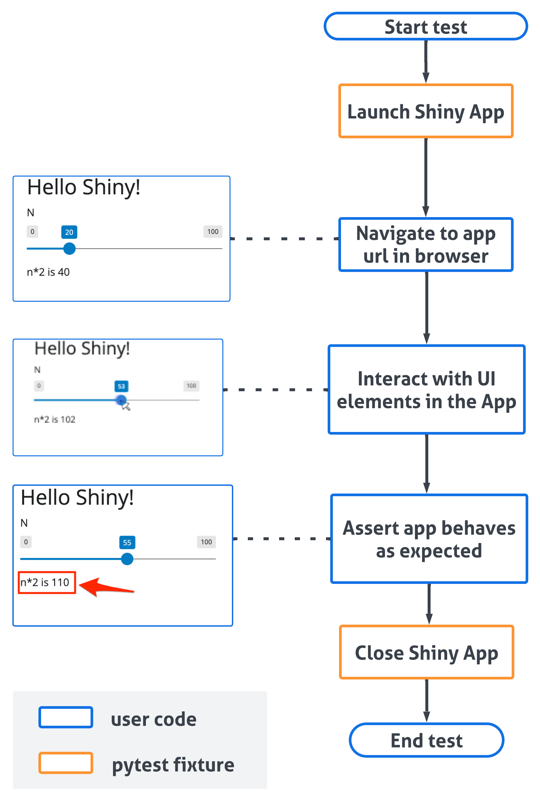

End-to-End Testing Your App
What is End-to-End Testing (and Why Should You Care)?
Imagine you’ve built a beautiful, interactive Shiny app. You want to make sure everything works exactly as expected, every time, for every user. That’s where end-to-end testing comes in.
What it is:
- End-to-end testing checks your entire Shiny app, from start to finish, as if a real person were using it.
- It simulates user actions like clicking buttons, filling in forms, and navigating between different parts of your app.
- It verifies that the app’s outputs (like graphs, tables, and text) are correct based on those actions.
Why it’s awesome:
- Early bug detection: Find problems before your users do! No more embarrassing surprises.
- Confidence in changes: When you update your app, tests make sure you haven’t accidentally broken anything.
- Time saver: Instead of manually clicking through your app every time you make a change, tests automate the process.
- Peace of mind: Know that your app is working reliably, so you can focus on building new features.
Introducing Playwright: A Comprehensive Automated Testing Solution for Web Applications
Playwright is a robust, open-source automation framework developed by Microsoft that enables programmatic control of web browsers. This tool provides developers with the capability to automate interactions with web applications across Chrome, Firefox, and Safari, simulating user behavior in a controlled, reproducible environment.
Why Playwright is perfect for Shiny:
- Handles interactivity: It can interact with all those cool Shiny widgets like sliders, dropdowns, and buttons.
- Cross-browser testing: Make sure your app works flawlessly on different browsers.
- Smart waiting: Playwright automatically waits for your app to load and for elements to be ready, so your tests are reliable.
- Easy to learn: The code is relatively straightforward, and we’ll walk you through it.
Learn more at the official Playwright documentation.
Let’s Build and Test a Simple Shiny App!
We’ll start with a super simple example to show you the basics. Follow along, and you’ll be writing your own tests in no time!
Step 1: Create Your First Shiny App
First, let’s create a tiny Shiny app with just a slider and some text.
- Create a new file: Create a file named
app.py. - Copy and paste this code:
from shiny.express import input, render, ui
ui.panel_title("Hello Shiny!")
ui.input_slider("n", "N", 0, 100, 20)
@render.text
def txt():
return f"n*2 is {input.n() * 2}"- What this app does: This app displays a slider (labeled “N”) that goes from 0 to 100. Below the slider, it shows the text “n*2 is [value]“, where [value] is twice the current slider value.
Step 2: What Are We Testing?
Our goal is to write a test that does the following:
- Opens the app: Starts the Shiny app in a browser.
- Moves the slider: Sets the slider to a specific value (55 in this case).
- Checks the output: Verifies that the text below the slider displays the correct result (“n*2 is 110”).
Step 3: Write Your First Test!
Now for the exciting part – writing the test code!
- Create a new file: Create a new file named
test_basic_app.pyin the same directory as yourapp.pyfile. Remember, test file names must start withtest_. - Copy and paste this code:
from shiny.playwright import controller
from shiny.run import ShinyAppProc
from playwright.sync_api import Page
def test_basic_app(page: Page, local_app: ShinyAppProc) -> None:
# Navigate to the app URL when it's ready
page.goto(local_app.url)
# Controller objects for interacting with specific Shiny components
txt = controller.OutputText(page, "txt")
slider = controller.InputSlider(page, "n")
# Move the slider to position 55
slider.set("55")
# Verify that the output text shows "n*2 is 110"
# (since 55 * 2 = 110)
txt.expect_value("n*2 is 110")Understand role of Fixtures
- ShinyAppProc: Manages a Shiny application subprocess, handling lifecycle (startup, shutdown) and providing access to output streams.
- page: Playwright object representing the browser tab.
- local_app: Running instance of the Shiny application.
Understand role of Controllers
Controllers such as
OutputTextandInputSliderprovide abstraction over Playwright’s low-level interactions by:- Automatically handling element waiting and state changes
- Offering specialized interfaces for specific Shiny component types
- Managing Shiny-specific behaviors without additional code
- Providing consistent patterns for testing similar components
And visually, this is what happens when the test runs:

Step 4: Run Your Test!
Before you run the test, you need to install a couple of things:
- Install pytest and pytest-playwright: Open your terminal (or command prompt) and type:
pip install pytest pytest-playwrightNavigate to your app’s directory: In the terminal, use the
cdcommand to go to the folder where you savedapp.pyandtest_basic_app.py.Run the test: Type the following command and press Enter:
pytestYou should see output similar to this:
======== test session starts ========
... (some details about your setup)
.
======== 1 passed in 3.05s ========What does this mean?
- The
.(dot) means your test passed! - If you see an
F, it means the test failed. Double-check your code and make sure you followed all the steps.
Visualize Your Test (Optional)
If you want to see what Playwright is doing, you can run the test in “headed” mode. This will open a browser window and show you the interactions.
pytest --headedYou can also specify a particular browser:
pytest --browser firefoxAdding Tests to an Existing Shiny App
If you already have a Shiny app, you can easily add tests:
- Open your terminal: Navigate to your app’s directory.
- Run the shiny add test command:
shiny add testAnswer the prompts: It will ask for the path to your app file (e.g.,
app.py) and a name for your test file (e.g.,test_myapp.py). Remember, the test file name must start withtest_.Edit the generated test file: This command creates a basic test file. You’ll need to modify it to add your specific test scenarios (like the slider example above).
Troubleshooting Common Issues
Test fails with an error about finding an element: Make sure the IDs you’re using in your test code (e.g., “txt”, “n”) match the IDs in your Shiny app code. Inspect your app’s HTML in the browser’s developer tools if you’re unsure.
Test is flaky (sometimes passes, sometimes fails): This can happen if your app takes a while to load or if there are timing issues. Playwright has built-in waiting mechanisms, but you might need to add explicit waits in some cases. See the Playwright documentation on waiting.
Keep Exploring!
You’ve taken your first steps into the world of Shiny app testing! Here are some resources to help you learn more:
- Shiny testing API documentation - This is your go-to guide for all the available testing methods in Shiny.
- Playwright documentation - Learn more about Playwright’s powerful features.
- pytest documentation
Happy testing! You’re now well-equipped to build more robust and reliable Shiny apps.